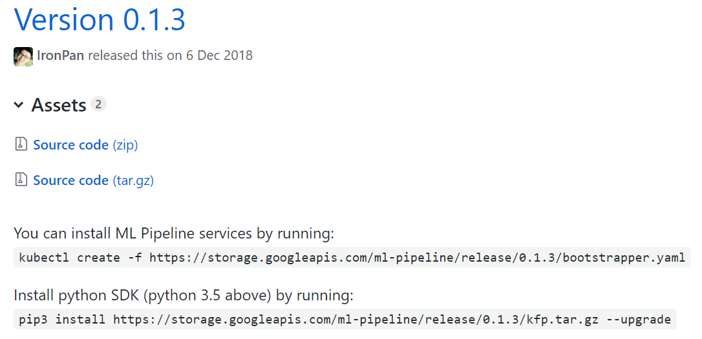
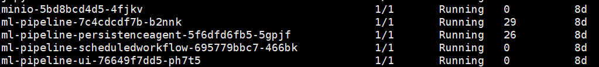
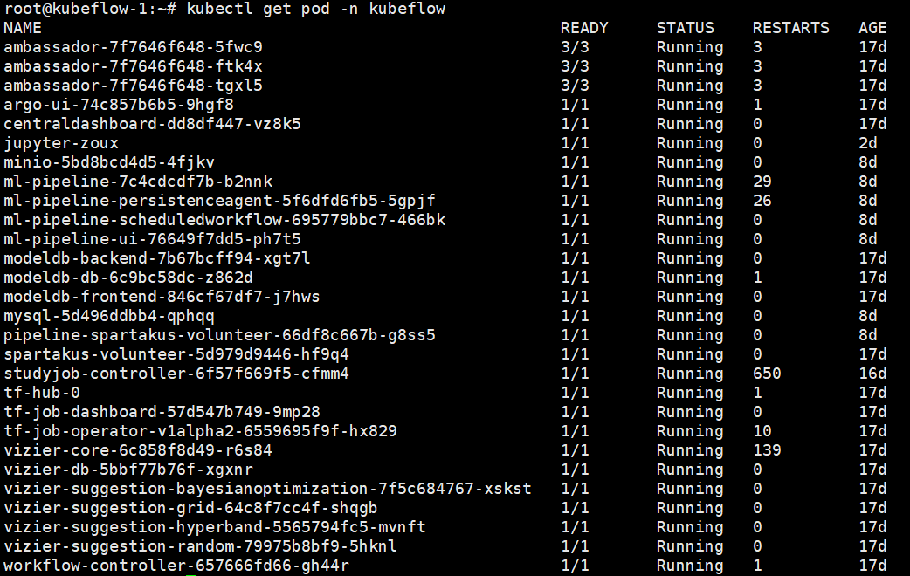
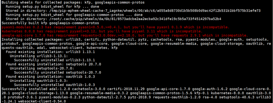

kubeflow pipelines--国内环境安装
在前面的教程中，我们已经搭建好了本地的kubeflow集群，接下来因为个人需要，本人需要再在此基础上搭建好kubeflow pipelines.
首先需要了解pipelines是什么，能做什么，具体可以参考官网描述：
https://www.kubeflow.org/docs/pipelines/pipelines-overview/
从V0.1.3开始，Kubeflow Pipelines成为Kubeflow核心组件之一。 它在Kubeflow部署期间自动部署。 您可以在GKE上使用Kubeflow部署进行尝试。 请参阅GKE设置指南。注意：由于kubeflow / pipelines＃345和kubeflow / pipelines＃337，Kubeflow Pipelines依赖于GCP服务，非GKE集群不支持某些功能。
上面这一段是官网的描述，点击V0.1.3的链接，进入这个页面： https://github.com/kubeflow/pipelines/releases/tag/0.1.3

这里显示安装kubeflow pipelines只需要俩步。
（1）按照pipeline
（2）按照SDK
但是你直接运行时会报错的。除非你的服务器可以自由的上网。
第一步的解决办法：
先使用某些办法，下载
https://storage.googleapis.com/ml-pipeline/release/0.1.3/bootstrapper.yaml
该yaml文件。然后将yaml文件中使用的国外镜像替换成你自己的镜像。如果大家不能访问，可以使用我已经修改好的yaml文件。该文件使用的镜像时我tag好的dockerhub镜像。文件地址如下：
https://github.com/zoux86/kubeflow/blob/master/bootstrapper.yaml
下载好bootstrapper.yaml文件后，在同级目录下，使用kubectl命令
|
|
执行完这个命令之后，耐心等一段时间。因为这里要启动pipelines的组件，下篇文章会介绍kubeflow和pipelines的组件信息。一段时间后，使用kubectl get pod -n kubeflow可以查看到，多了下面的这些pod,这就是pipelines的服务。

注意这是我成功后的截图。如果你是国内环境，你这些pod启动还是会有问题。主要是俩个问题，第一个是镜像拉取失败，第二个是挂载卷失败。原因是启动bootstrapper.yaml, 该文件会启动其他的好几个服务，比如前端，后端等。而这些默认的镜像都是我们正常情况下拉取不到的。
镜像拉取失败的解决方法如下：
|
|
使用上面的命令修改PODNAME对应的yaml文件。修改yaml文件中使用的镜像，然后保存退出。等一会该POD就会自动拉取你修改后的镜像。
这里需要你提前将镜像拉取下来，然后tag成你自己的镜像。
PS：我在dockerhub上上传了一部分自己拉取的grc.io镜像，大家可以在上面搜索 “zoux”,看是否有大家想要的镜像。
解决挂载卷失败的问题
这里需要我们提前建立自己的PV（持久卷），只用建立PV就行了。建立完之后会自动匹配。 具体步骤可以参考我前面文章，为kubeflow配置NFS做后端存储系统。
解决这里俩步之后，使用kubeflow get pod -n kubeflow查看pod, 你就会发现所有的Pod都启动起来了。 
第二步的解决方法
到这里其实我们只是完成了第一步，安装好了ML Pipeline services。接下来我们需要安装python SDK了。官网中说使用的是这个命令：
|
|
但是这里我们首先观察一下这个命令，有俩点需要注意：
第一是pip3，这里需要我们在服务器中安装好python3.5以上的环境。
第二是访问的网址是googleapis,如果大家不能访问可以使用我下载好的。
地址：https://github.com/zoux86/kubeflow/blob/master/kfp.tar.gz
PS：安装SDK可能遇到的问题
问题1：

解决办法：直接手动使用pip命令安装这些包。
问题2：如果安装pyyaml时，报错说不能安装或者不能删除已有的pyyaml
Cannot uninstall 'PyYAML'. It is a distutils installed project and thus we cannot accurately determine which files belong to it which would lead to only a partial uninstall.解决方法： 降低pip3版本，然后安装
sudo -H pip3 install pip==8.1.1
sudo -H pip3 install --upgrade PyYAML最后验证python sdk是否成功。
如果在python命令行中能 “import kfp”的话，恭喜你成功了。